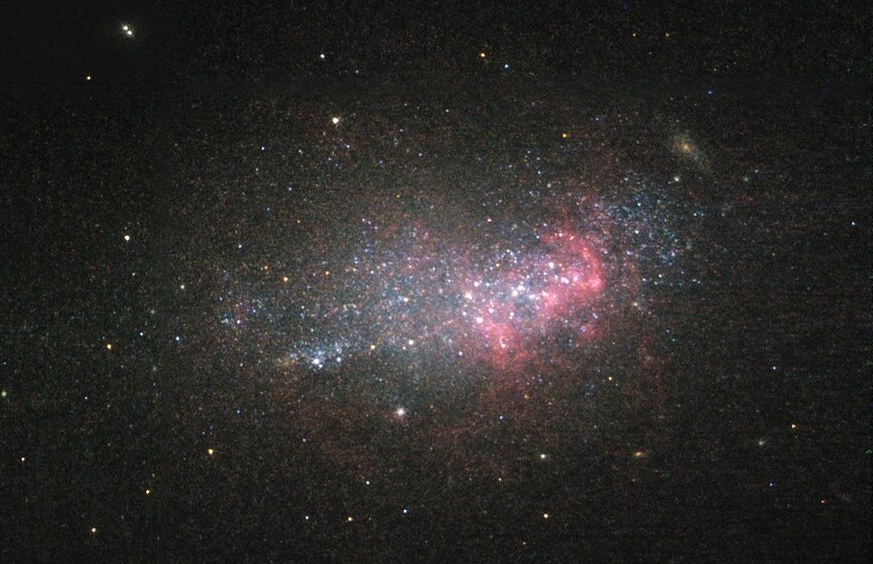

Research

I have a broad interest in galaxy formation and evolution. Currently I am focusing on dwarf galaxies in the nearby universe and on their globular cluster systems, using deep multi-wavelength imaging together with integral-field and multi-object spectroscopy from Keck and the VLT.
Unusual Globular Cluster System in the Ultra-diffuse Galaxy FCC 224
We study the quiescent ultra-diffuse galaxy FCC 224 in the Fornax cluster using Hubble Space Telescope (HST) imaging, motivated by peculiar properties of its globular cluster (GC) system revealed in shallower imaging. The surface brightness fluctuation distance of FCC 224 measured from HST is 18.6 ± 2.7 Mpc, consistent with the Fornax cluster distance. We use Prospector to infer the stellar population from a combination of multiwavelength photometry (HST, ground-based, Wide-field Infrared Survey Explorer) and Keck Cosmic Web Imager spectroscopy. The galaxy has a mass-weighted age of ~10 Gyr, metallicity [M/H] of ~−1.25 dex, and a very short formation e-folding time of τ ~ 0.3 Gyr. Its 12 candidate GCs exhibit highly homogeneous g475 − I814 colors, merely 0.04 mag bluer than the diffuse starlight, which supports a single-burst formation scenario for this galaxy. We confirm a top-heavy GC luminosity function, similar to the two dark matter deficient galaxies NGC 1052-DF2 and DF4. However, FCC 224 differs from those galaxies with relatively small GC sizes of ~3 pc (~35% smaller than typical for other dwarfs), and with radial mass segregation in its GC system. We are not yet able to identify a formation scenario to explain all of the GC properties in FCC 224. Follow-up measurements of the dark matter content in FCC 224 will be crucial because of the mix of similarities and differences among FCC 224, DF2, and DF4.
Related publications:
– Yimeng Tang, Aaron J. Romanowsky, Jonah S. Gannon, et al. 2025, ApJ, 982, 1.
An Unexplained Origin for the Unusual Globular Cluster System in the Ultra-diffuse Galaxy FCC 224
– Maria Luísa Buzzo, Duncan A. Forbes, Aaron J. Romanowsky, et al. (including Y. Tang) 2025, A&A, 695, A124.
A New Class of Dark Matter-Free Dwarf Galaxies? I. Clues from FCC 224, NGC 1052-DF2 and NGC 1052-DF4
Beyond DM-free Galaxies NGC 1052-DF2 and DF4: Testing the Bullet Dwarf Collision Scenario in the NGC 1052 Group
NGC 1052-DF2 and -DF4 are two ultra-diffuse galaxies that have been reported as deficient in dark matter and associated with the same galaxy group. Recent findings suggest that DF2 and DF4 are part of a large linear substructure of dwarf galaxies that could have been formed from a high-velocity head-on encounter of two gas-rich galaxies, known as a “bullet dwarf” collision. Based on new observations from the Hubble Space Telescope, combined with existing imaging from the u band to mid-infrared, we test the bullet dwarf scenario by studying the morphologies and stellar populations of the trail dwarfs. We find no significant morphological differences between the trail dwarfs and other dwarfs in the group, while for both populations, their photometric major axes unexpectedly align parallel with the trail. We find that the trail dwarfs have significantly older ages and higher metallicities than the comparison sample, supporting the distinctiveness of the trail. These observations provide key constraints for any formation model, and we argue that they are currently best explained by the bullet dwarf collision scenario, with additional strong tests anticipated with future observations.
Related publication:
– Yimeng Tang, Aaron J. Romanowsky, Pieter G. van Dokkum, et al. 2025, ApJ, 978, 21.
Testing the Bullet Dwarf Collision Scenario in the NGC 1052 Group Through Morphologies and Stellar Populations
Unveiling the Formation of NGC 2915 with MUSE
NGC 2915 is a unique nearby galaxy that is classified as an isolated blue compact dwarf based on its optical appearance but has an extremely extended H I gas disk with prominent Sd-type spiral arms. To unveil the starburst-triggering mystery of NGC 2915, we performed a comprehensive analysis of deep VLT/MUSE integral field spectroscopic observations that cover the star-forming region in the central kiloparsec of the galaxy. We find that episodes of bursty star formation have recurred in different locations throughout the central region, and the most recent one peaked around 50 Myr ago. The bursty star formation has significantly disturbed the kinematics of the ionized gas but not the neutral atomic gas, which implies that the two gas phases are largely spatially decoupled along the line of sight. No evidence for an active galactic nucleus is found based on the classical line-ratio diagnostic diagrams. The ionized gas metallicities have a positive radial gradient, which confirms the previous study based on several individual H II regions and may be attributed to both the stellar feedback-driven outflows and metal-poor gas inflow. Evidence for metal-poor gas infall or inflow includes discoveries of high-speed collisions between gas clouds of different metallicities, localized gas metallicity drops and unusually small metallicity differences between gas and stars. The central stellar disk appears to be counter-rotating with respect to the extended H I disk, implying that the recent episodes of bursty star formation have been sustained by externally accreted gas.
Related publication:
– Yimeng Tang, Bojun Tao, Hong-Xin Zhang, et al. 2022, A&A, 668, A179.
Unveiling the Formation of NGC 2915 with MUSE: A Counterrotating Stellar Disk Embedded in a Disordered Gaseous Environment
(reported on Phys.org)
Main figures:
{kind=link}
{kind=link}
{kind=link}
{kind=link}
Origin of Surface Brightness Profile Breaks of Disk Galaxies from MaNGA
In an effort to probe the origin of surface brightness profile (SBP) breaks widely observed in nearby disk galaxies, we carry out a comparative study of stellar population profiles of 635 disk galaxies selected from the Mapping Nearby Galaxies at Apache Point Observatory spectroscopic survey. We classify our galaxies into single exponential (Ti), down-bending (Tii), and up-bending (Tiii) SBP types and derive their spin parameters and radial profiles of age/metallicity-sensitive spectral features. Most Tii (Tiii) galaxies have down-bending (up-bending) star formation rate (SFR) radial profiles, implying that abrupt radial changes of SFR intensities contribute to the formation of both Tii and Tiii breaks. Nevertheless, a comparison between our galaxies and simulations suggests that stellar migration plays a significant role in weakening down-bending stellar mass surface density profile breaks. While there is a correlation between the break strengths of SBPs and age/metallicity-sensitive spectral features for Tii galaxies, no such correlation is found for Tiii galaxies, indicating that stellar migration may not play a major role in shaping Tiii breaks, as is also evidenced by a good correspondence between the break strengths of stellar mass surface density and SBPs of Tiii galaxies. We do not find evidence for galaxy spin being a relevant parameter for forming different SBP types, nor do we find significant differences between the asymmetries of galaxies with different SBP types, suggesting that environmental disturbances or satellite accretion in the recent past do not significantly influence the break formation. By dividing our sample into early and late morphological types, we find that galaxies with different SBP types follow nearly the same tight stellar mass–R25 relation, which makes the hypothesis that stellar migration alone can transform SBP types from Tii to Ti and then to Tiii highly unlikely.
Related publication:
– Yimeng Tang, Qianhui Chen, Hong-Xin Zhang, et al. 2020, ApJ, 897, 79.
New Constraints on the Origin of Surface Brightness Profile Breaks of Disk Galaxies from MaNGA
Main figures:
{kind=link}
{kind=link}
{kind=link}
{kind=link}